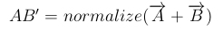

Es soll die Pyramide aus der WebGL Lesson 4 durch eine Kugel ersetzt werden. Zur Darstellung der Kugel sollen Dreiecke verwendet werden. Die Dreiecke sollen durch rekrusive Unterteilung eines Tetraeders realisiert werden.
Um aus einem Tetraeder eine Kugel zu erzeugen, müssen alle Eckpunkte des Tetraeders auf der Kugeloberfläche liegen. Die Kugel, an die wir uns anähern, hat den Mittelpunkt M im Ursprung des Koordinatensystems und den Radius r=1. Für die Zerlegung des Tetraeders werden alle Seitendreiecke des Tetraeders einzeln betrachtet. Das Dreieck besteht aus den Eckpunkten A, B und C. Wir zerlegen nun dieses Dreieck in 4 kleinere Dreiecke (s. Abb. 1). Dazu benötigen wir die Mittelpunkte AB, BC und AC der Geraden AB, BC und AC. Die Vektoren AB, BC und AC liegen nun auf der Oberfläche des Tetraeders. Um diese nun an den Kreis anzunähern müssen diese lediglich normalisiert werden, wodurch sie auf der Kugeloberfläche liegen ( s. Abb. 2). Um also den neuen Punkt AB auf der Kugeloberfläche zu berechnen gilt,  Je nach gewünschtem Detailgrad können nun die Schritte beliebig oft auf die neu zerlegten Dreiecke angewandt werden.
Zerlegung des Dreieckes durch Kantenmittelpunkte.
Verschiebung eines Punktes von der Oberfläche des Tetraeders (AB) auf die Oberfläche des Kreises (AB').